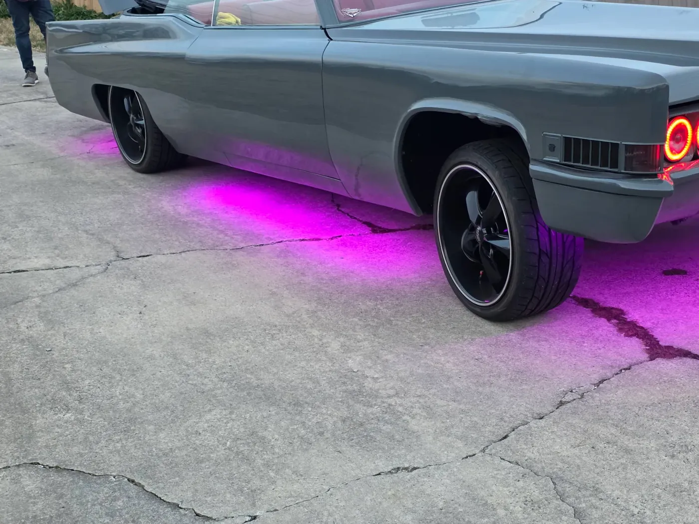
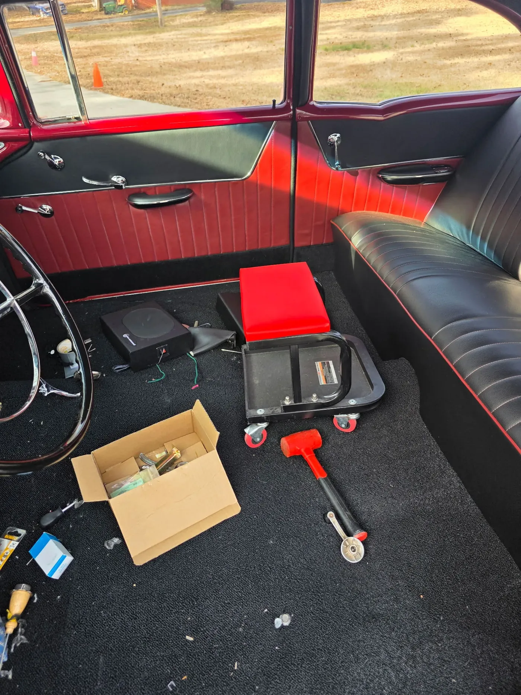

Gallery
Work out of the Monroe shop
21 automotive · 6 marine · 3 aviation · 3 motorcycle. Every piece here was cut, stitched and fitted in house.








See something close to your project?
Bring the vehicle, the boat, or just the seat by the shop and we will give you an itemised estimate at no cost.